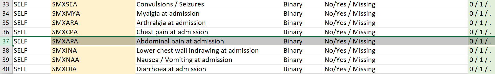
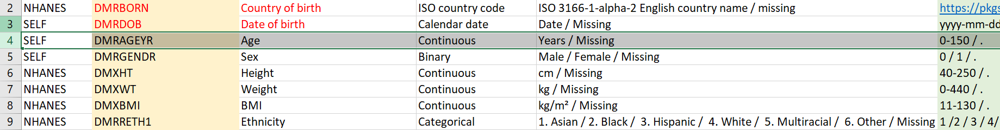

Part 2: Data validation
Now that we have the data loaded, we can check if the data is compliant with the ranges described on the codebook. (IS IT PUBLIC/CAN WE LINK IT HERE?). On this step we can check that the categorical variables are properly encoded and that the numerical variables have the appropriate range. Regarding the numerical variables, we will not be checking the range, we will be looking the 5%/95% interquartile range, as there is no DataSHIELD function to output maximums and minimums.
Columns available
First, we check the columns available on the loaded data.
colnames_servers <- ds.colnames("data")Since not all study centers have collected the same variables, we can use the following script to see the common variables.
Reduce(intersect, colnames_servers) [1] "DMRAGEYR" "DATAD" "CMXCVD" "CMXCVD_numeric"
[5] "CMXHT" "CMXHT_numeric" "CMXCKD" "CMXCKD_numeric"
[9] "CMXCLD" "CMXCLD_numeric" "CMXCPD" "CMXCPD_numeric"
[13] "CMXRHE" "CMXRHE_numeric"Another scenario may be the one where we know our variables of interest and want to check whether they are or not on the study centers. To do that we can use a function from the dsHelper package.
dsHelper::dh.classDiscrepancy(df = "data", vars = c("DSXOS", "CMXCLD", "RFXONC"), conns = connections)# A tibble: 3 × 5
variable discrepancy hm_hospitales sc_verona umf_cluj
<chr> <chr> <chr> <chr> <chr>
1 DSXOS yes character NULL character
2 CMXCLD no character character character
3 RFXONC yes NULL character characterThis function gives us information about the class of the selected variables on each study server. Also, when a certain variable is not available, it shows as NULL class. So with this function we can get information about data availability and harmonization.
Dropping a study server
Once we are aware of the available variables, we might be interested on dropping one of the connections (or multiple). To do so, we have to close the desired connection. We will illustrate that we are dropping the Madrid study center.
datashield.logout(connections$hm_hospitales)Now the connection is closed, so we can remove the HM Hospitales server from our connections list.
connections$hm_hospitales <- NULLFrom this point onwards, the connections object will only access the Verona and Cluj study servers.
Categorical variables
We compare against the codebook and see that we have the CMXCVD variable, which should have the categories: 0 and 1 (plus missing).
 
First, we can check the class of this variable.
ds.class("data$CMXCVD")$sc_verona
[1] "character"
$umf_cluj
[1] "character"We might have expected to have a variable of class factor, later on this workshop we will see how to transform a variable to a factor, for the moment we do not have to worry. Having a character variable is enough for the data validation.
Following that, we can extract an uni-dimensional contingency table of the variable. This way we will obtain the different categories of the variable and their counts. Aside, we will obtain the count of missings (NA) for this variable.
CMSCVD_table <- ds.table("data$CMXCVD")
Data in all studies were valid
Study 1 : No errors reported from this study
Study 2 : No errors reported from this studyCMSCVD_table$output.list$TABLES.COMBINED_all.sources_countsdata$CMXCVD
Yes No NA
248 143 2123 CMSCVD_table$output.list$TABLE_rvar.by.study_counts study
data$CMXCVD sc_verona umf_cluj
Yes 139 109
No 0 143
NA 1376 747This variable complies with the codebook.
Numerical variables
From previously shown codebook screenshot, we can see that we also have the DMRAGEYR variable, which should be numeric. We can confirm that.
ds.class("data$DMRAGEYR")$sc_verona
[1] "numeric"
$umf_cluj
[1] "numeric"As previously mentioned, we will check the 5%/95% interquartile range to see the range of the variable.
ds.quantileMean("data$DMRAGEYR", type = "split")$sc_verona
5% 10% 25% 50% 75% 90% 95% Mean
16.70000 22.40000 38.00000 53.00000 68.00000 78.00000 82.30000 52.06601
$umf_cluj
5% 10% 25% 50% 75% 90% 95% Mean
40.450 46.900 54.250 65.000 72.000 80.100 84.000 63.832 This is not the most useful way to check the range of a variable. There is an alternative provided by the dsHelper package, which is to exatract the (noise-perturbed) variable which would be used for the scatter plot. Depending on the security parameters of the Opal server, the noise added could be too severe to be useful, but with the default settings it serves as a great alternative.
variable <- dh.getAnonPlotData(df = "data", var_1 = "DMRAGEYR")
head(variable)# A tibble: 6 × 2
cohort DMRAGEYR
<chr> <dbl>
1 sc_verona 70.0
2 sc_verona 43.0
3 sc_verona 54.0
4 sc_verona 45.0
5 sc_verona 67.0
6 sc_verona 59.0variable %>%
dplyr::group_by(cohort) %>%
dplyr::summarise(range = paste(round(range(DMRAGEYR)), collapse = ", "))# A tibble: 3 × 2
cohort range
<chr> <chr>
1 combined 10, 94
2 sc_verona 10, 94
3 umf_cluj 31, 92Finally, we can also check the amount of missings of the numerical variable.
ds.numNA("data$DMRAGEYR")$sc_verona
[1] 0
$umf_cluj
[1] 749